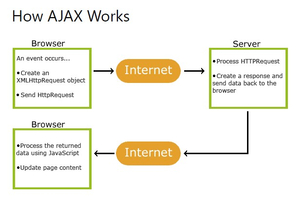
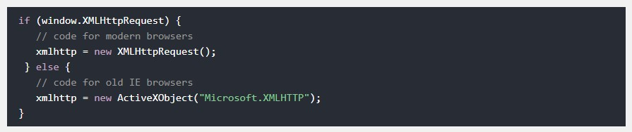

* AJAX is a developer's dream, because you can
* AJAX just uses a combination of:
* AJAX allows web pages to be updated asynchronously by exchanging data with a web server behind the scenes. This means that it is possible to update parts of a web page, without reloading the whole page.

* The keystone of AJAX is the XMLHttpRequest object. All modern browsers support the XMLHttpRequest object.
variable = new XMLHttpRequest();
* For security reasons, modern browsers do not allow access across domains.
* This means that both the web page and the XML file it tries to load, must be located on the same server.
* The examples on W3Schools all open XML files located on the W3Schools domain.
* Old versions of Internet Explorer (5/6) use an ActiveX object instead of the XMLHttpRequest object:
variable = new ActiveXObject("Microsoft.XMLHTTP");
* To handle IE5 and IE6, check if the browser supports the XMLHttpRequest object, or else create an ActiveX object.

* To send a request to a server, we use the open() and send() methods of the XMLHttpRequest object.
xhttp.open("GET", "ajax_info.txt", true);
xhttp.send();
* GET is simpler and faster than POST, and can be used in most cases.
* However, always use POST requests when:
* Get method -> maximum of 2,048 characters, minus the number of characters in the actual path.
* POST has no size limitations.
* To avoid cached result, add a unique ID to the URL.
xhttp.open("GET", "demo_get.asp?t=" + Math.random(), true);
xhttp.send();
* If you want to send information with the GET method, add the information to the URL:
xhttp.open("GET", "demo_get2.asp?fname=Henry&lname=Ford", true);
xhttp.send();
xhttp.open("POST", "demo_post.asp", true);
xhttp.send();
* To POST data like an HTML form, add an HTTP header with setRequestHeader(). Specify the data you want to send in the send() method.
xhttp.open("POST", "ajax_test.asp", true);
xhttp.setRequestHeader("Content-type", "application/x-www-form-urlencoded"); //setRequestHeader(header, value)
xhttp.send("fname=Henry&lname=Ford");
* The url parameter of the open() method, is an address to a file on a server. The file can be any kind of file, like .txt and .xml, or server scripting files like .asp and .php (which can perform actions on the server before sending the response back).
* Server requests should be sent asynchronously. The async parameter of the open() method should be set to true.
By sending asynchronously, the JavaScript does not have to wait for the server response, but can instead.
* With the XMLHttpRequest object you can define a function to be executed when the request receives an answer. The function is defined in the onreadystatechange property of the XMLHttpRequest object:
A callback function is a function passed as a parameter to another function.
* The getAllResponseHeaders() Method -> The getAllResponseHeaders() method returns all header information from the server response.
this.getAllResponseHeaders();
The getResponseHeader() Method -> The getResponseHeader() method returns specific header information from the server response.
this.getResponseHeader("Last-Modified");